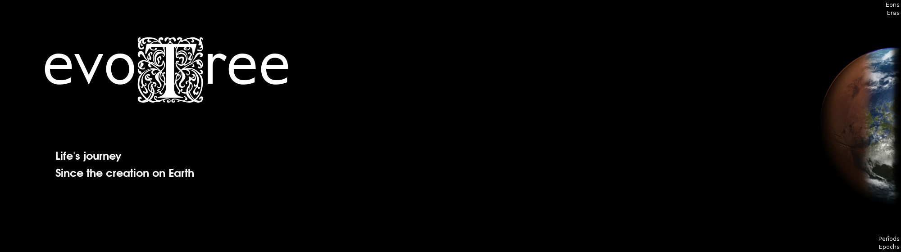

4.540 G.y.
4.540 G.y.
LUCALe dernier ancêtre commun universel ou DACU est le plus récent organisme dont sont issues les trois lignées cellulaires et donc l'ensemble des espèces vivant actuellement sur Terre.
HADEAN
ARCHEAN
PROTEROZOIC
PHANEROZOIC
HADEAN
EOARCHEAN
PALEOARCHEAN
MESOARCHEAN
NEOARCHEAN
PALEOPROTEROZOIC
MESOPROTEROZOIC
NEOPROTEROZOIC
PALEOSOIC
MESOZOIC
CENOZOIC
SIDERIAN
RHYACIAN
OROSIRIAN
STATHERIAN
CALYMMIAN
ECTASIAN
STENIAN
TONIAN
CRYOGENIAN
EDIACARAN
CAMBRIAN
ORDOVICIAN
SILURIAN
DEVONIAN
CARBONIFEROUS
PERMIAN
TRIASSIC
JURASSIC
CRETACEOUS
PALEOGENE
NEO
Q
TERRENEUVIAN
SERIES-II
SERIES-III
FURONGIAN
LOWER
MIDDLE
UPPER
LLANDOVERY
WENLOCK
L
P
LOWER
MIDDLE
UPPER
MISSISSIPIAN
PENNSYLVANIAN
CISURALIAN
GUADALUPIAN
LOPINGIAN
LOWER
MIDDLE
UPPER
LOWER
MIDDLE
UPPER
LOWER
UPPER
PALEOCENE
EOCENE
OLIGOCENE
MIOCENE
P
P

4.540 G.y.